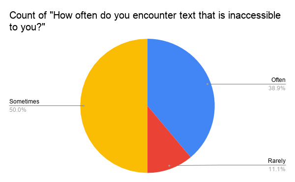
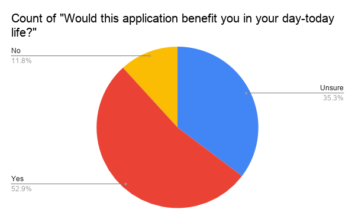
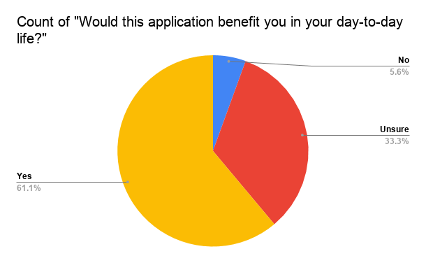

Problem
Vi lever i en verden av informasjon, men vi finner at tilgangen til denne informasjonen er blitt avbrutt for visse grupper mennesker. Det være seg synshemming, sosial angst, eller at informasjonen rett og slett ikke er tilgjengelig, en betydelig del av befolkningen er avskåret.
TextMap er svaret på disse problemene. Bruke verktøyene som allerede er tilgjengelige til oss, smarttelefoner og skjermlesere, bruker TextMap GPS-teknologi kombinert med brukerinngang for å gi deg de informasjon du ikke kan se fra verden rundt deg.
Nyttig for synshemmede og seende både, lar TextMap deg vite nøyaktig hva du trenger før du går inn i et etablissement. Det hjelper også synshemmede lesetegn de ikke kan komme til, og all tekst de møter i utlandet.
Undersøkelse
Synshemming er definert som nedbrytning av synet til det punktet hvor vanlige metoder ikke gjør det arbeid. Verdens helseorganisasjon ga ut en artikkel om synshemming i 2010. Studien konkluderte med et estimat at rundt 285 millioner var påvirket av synshemming. Ut av de 285 millioner, hele 39 millioner er helt blinde. Sammenlignet med verdensbefolkningen utgjør denne delen til sammen 4,25 prosent.
Synshemming begrenser flere sider av personers liv til daglig. De som er det nedsatt kamp spesielt i sosiale og yrkesmiljøer.
For å omfatte hvor relevant problemet er, undersøkte vi 42 respondenter i et online undersøkelse publisert til et offentlig forum dedikert til synshemmede. Etter filtrering svarene til de som bekreftet at de var svaksynte, fant vi dette:
Nesten 89 prosent av svaksynte bekreftet at de hadde problemer med tekst, informasjon som var utilgjengelig for dem. De resterende 11 prosentene svarte at de sjelden noensinne hadde problemer. Dette var ytterligere bekreftet av hva annet vi fant:

Et flertall av de spurte rapporterte at de fant aktive vanskeligheter, dag til dag, med informasjon som ikke var tilgjengelig for dem på grunn av deres svekkelse.
Hele 67,7 prosent var enige i uttalelsen, mens vel 5,9 prosent var imot den. Fra dette forsto vi at problemet vi taklet var relevant for synshemmede samfunnet.
Dette gjenspeiles også i undersøkelsen vår, da svaksynte svarte:
Et flertall på 52,9 prosent bekrefter nok en gang at det er interesse for programvaren vi er utvikle. De andre 11,8 prosentene trodde ikke applikasjonen ville komme dem til gode, men denne prosentandelen kan det bli mindre hvis du får sjansen til å prøve applikasjonen. De ikke-svaksynte har også vist interesse for vårt produkt.
Ikke bare virket de som ble nedsatt, interessert, men noen så andre bruksområder enn beregnet. Både diagrammer viste at omtrent 52 prosent av hver demografiske sagbruk i appen. Det som bekreftes er at blant hele vår potensielle brukerbase, de fleste kan se en virkelig bruk i programvaren vår:

Undersøkelsen hadde en boks for tilbakemelding fra brukere, der respondentene fortalte oss hva de følte var mangler fra programvaren. For eksempel foreslo en respondent at vi har en måte å bekrefte og rangere tilbakemeldingene, som vi implementerte i programvaren vår.
Vi måtte også finne en måte å rapportere på flyttinger og slikt, og skaper et nettverk mellom oss og forskjellige selskaper som brukte programvaren vår for tilgjengelighet.
Løsning
TextMap er en programvare som bygger på allerede eksisterende løsninger for å hjelpe svaksynte og folk for øvrig.
Bruke den innebygde GPS-teknologien til smarttelefoner og bygge videre på allerede eksisterende skjermleser applikasjoner for svaksynte, vi kan hente ut informasjon om virksomheter og tegn, slik de blir satt inn av andre brukere av appen.
Appen leveres med en database som inneholder informasjon om et stort utvalg av bedrifter, men over tid vil brukerne sende inn mer og mer informasjon til slutt skaper en total tilsyn med restaurantmenyer, skilt, underholdning informasjon osv., alle bekreftet og tilgjengelig på standard engelsk.

Få tilgang til verden

Tilgjengelig tekst

Last opp

{kind=link}
.svg){kind=link}